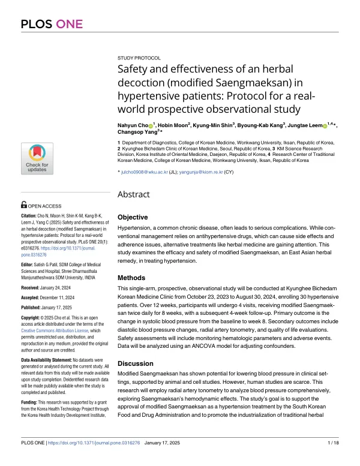

Safety and effectiveness of an herbal decoction (modified Saengmaeksan) in hypertensive patients: Protocol for a real-world prospective observational study
Cho N, Moon H, Shin KM, Kang BK, Leem J, Yang C
PLOS ONE 20(1):e0316276

첫 장 · 오픈액세스First page · open access
논문 소개Summary
이 글은 결과 논문이 아니라 연구 계획서입니다. 가감생맥산이 고혈압 환자의 혈압을 실제로 낮추는지를 진료 현장에서 확인하기 위한 전향적 관찰연구의 설계를 미리 공개한 것입니다. 계획서를 먼저 내는 이유는 나중에 결과가 좋게 나온 것만 골라 보고하는 일을 막기 위해서입니다.
고혈압은 흔한 만성질환이고 방치하면 합병증이 심각합니다. 표준치료인 항고혈압제는 효과가 확실하지만 부작용과 복약 순응도 문제가 따라옵니다. 생맥산은 동아시아에서 오래 쓰인 처방이고 임상에서 고혈압에 널리 활용되지만, 사람을 대상으로 한 연구 근거는 부족합니다. 동물실험에서는 유의한 혈압 강하가 확인되었습니다.
설계는 이렇습니다. 경희비체담한의원에서 2023년 10월 23일부터 2024년 8월 30일까지 고혈압 환자 30명을 모집합니다(탈락률 33%를 감안한 분석 목표 20명). 만 19세 이상 75세 미만이면서, 항고혈압제를 쓰지 않는 경우 수축기혈압 140 이상 180 미만, 쓰는 경우 130 이상 180 미만이 대상입니다. 단일군으로 12주 동안 4회 방문하며, 가감생맥산을 하루 두 번 8주간 복용한 뒤 4주를 더 추적합니다. 가감생맥산의 하루 분량은 갈근 5.33g, 길경 5.33g, 맥문동 5.33g, 산약 2.67g, 의이인 2.67g, 오미자 2.67g입니다.
1차 평가지표는 기저 시점 대비 8주째 수축기혈압 변화입니다. 2차로 이완기혈압, 요골동맥 톤메트리, 삶의 질을 봅니다. 안전성은 혈액검사 지표와 이상반응으로 확인하고, 분석은 교란변수를 보정한 공분산분석(ANCOVA)으로 합니다. 요골동맥 톤메트리를 넣은 것이 이 연구의 특징으로, 혈압 수치만이 아니라 혈역학적 변화를 함께 보려는 것입니다.
한계는 설계 자체에 있습니다. 대조군이 없는 단일군이고 규모가 작아, 결과가 좋게 나오더라도 인과관계를 말할 수 없습니다. 이 연구의 목표는 효과를 증명하는 것이 아니라, 실제 진료에서 쌓인 처방의 근거를 첫 단계로 마련하고 이후 규제기관 인정과 산업화 논의로 이어질 자료를 만드는 데 있습니다.
This is a study protocol, not a results paper. It publishes in advance the design of a prospective observational study testing whether modified Saengmaeksan actually lowers blood pressure in hypertensive patients in routine practice. Registering the design beforehand guards against reporting only the outcomes that later turn out favourable.
Hypertension is a common chronic disease with serious complications if left unmanaged. Antihypertensive drugs work, but bring adverse effects and adherence problems. Saengmaeksan has long been used in East Asian medicine and is widely prescribed for hypertension in practice, yet human evidence is scarce; animal studies have shown significant blood-pressure-lowering effects.
The design is as follows. Thirty hypertensive patients will be enrolled at Kyunghee Bichedam Korean Medicine Clinic between 23 October 2023 and 30 August 2024, targeting 20 analysable participants after an assumed 33% dropout. Eligible patients are aged 19 to under 75 with systolic blood pressure of 140–180 mmHg if not taking antihypertensives, or 130–180 mmHg if taking them. This single-arm study runs 12 weeks over four visits: modified Saengmaeksan twice daily for eight weeks, followed by four weeks of observation. The daily formulation comprises Puerariae Radix 5.33 g, Platycodonis Radix 5.33 g, Liriopis seu Ophiopogonis Tuber 5.33 g, Dioscoreae Rhizoma 2.67 g, Coicis Semen 2.67 g and Schisandrae Fructus 2.67 g.
The primary outcome is change in systolic blood pressure from baseline to week 8. Secondary outcomes are diastolic blood pressure, radial artery tonometry and quality of life. Safety is assessed through haematologic parameters and adverse events, with analysis by ANCOVA adjusting for confounders. The inclusion of radial artery tonometry distinguishes this study, allowing haemodynamic change to be examined rather than blood pressure readings alone.
The limitations are inherent to the design: a small single-arm study without a control group cannot establish causality however favourable the result. The aim is not to prove efficacy but to take a first step in building evidence for a prescription already in routine use, generating the data needed for later regulatory and industrialisation discussions.
인용Cite
Cho N, Moon H, Shin KM, Kang BK, Leem J, Yang C. Safety and effectiveness of an herbal decoction (modified Saengmaeksan) in hypertensive patients: Protocol for a real-world prospective observational study. PLOS ONE. 2025;20(1):e0316276. doi:10.1371/journal.pone.0316276